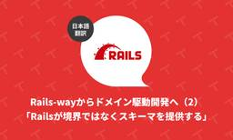
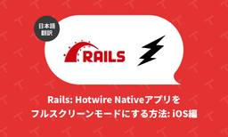

TechRacho
https://techracho.bpsinc.jp
TechRacho（テックラッチョ）は、BPSスタッフがおくるシステム開発＋αのアイデアマガジンです。Ruby on Railsネタ、EPUBの電子書籍ビューワに関連したAndroid/iOS開発ネタが多いです。社内の雰囲気がわかる記事もあるので興味をもってくださる方はぜひご覧ください。
フィード
Railsフレームワークを本格的にRactorに対応させるShopifyの取り組み（翻訳） 10
10
TechRacho
概要 CC BY-NC-SA 4.0 International Deedに基づいて翻訳・公開いたします。 英語記事: Bringing Rails into the Ractor-age | Rails at Scale 原文公開日: 2026年08月11日 原著者: Edouard Chin CC BY-NC-SA 4.0 Deed | 表示 - 非営利 - 継承 4.0 国際 | Creative Commons 日本語タイトルは内容に即したものにしました。 参考: class Ractor - Documentation for Ruby 4.0 Railsフレームワークを本格的にRactorに対応させる […]The post Railsフレームワークを本格的にRactorに対応させるShopifyの取り組み（翻訳） first appeared on TechRacho.
11時間前

Rails-wayからドメイン駆動開発へ（2）「Railsが境界ではなくスキーマを提供する」（翻訳） 2
TechRacho
概要 元サイトの許諾を得て翻訳・公開いたします。 英語記事: When Rails gives you a schema instead of a boundary 原文公開日: 2026年08月01日 原著者: Paweł Dąbrowski -- Arkencyのシニアスタッフエンジニアであり、『Rails on AWS』の著者です 日本語タイトルは内容に即したものにしました。 Rails-wayからドメイン駆動開発へ（2）「Railsが境界ではなくスキーマを提供する」（翻訳） Railsで作成された、ある典型的なSaaSアプリケーションの構成図を見てみましょう。このアプリ内のさまざまな部分が、明確な境界で仕 […]The post Rails-wayからドメイン駆動開発へ（2）「Railsが境界ではなくスキーマを提供する」（翻訳） first appeared on TechRacho.
3日前
Ruby: ZJITに導入されたインライナー（inliner）による驚異的な高速化（翻訳） 11
TechRacho
概要 CC BY-NC-SA 4.0 International Deedに基づいて翻訳・公開いたします。 英語記事: The inliner is yielding benefits for ZJIT | Rails at Scale 原文公開日: 2026年07月28日 原著者: Max Bernstein CC BY-NC-SA 4.0 Deed | 表示 - 非営利 - 継承 4.0 国際 | Creative Commons 日本語タイトルは内容に即したものにしました。 Ruby: ZJITに導入されたインライナー（inliner）による驚異的な高速化（翻訳） 私たちは最近、ZJITをまるで「本物のコン […]The post Ruby: ZJITに導入されたインライナー（inliner）による驚異的な高速化（翻訳） first appeared on TechRacho.
4日前

Rails: Hotwire Native アプリをフルスクリーンモードにする方法: iOS編（翻訳） 1
TechRacho
概要 元サイトの許諾を得て翻訳・公開いたします。 英語記事: How to Enter Full-Screen Mode in Your Hotwire Native App? - Part 2 iOS | William Kennedy 原文公開日: 2026年04月15日 原著者: William Kennedy Rails: Hotwire Nativeアプリをフルスクリーンモードにする方法: iOS編（翻訳） 前回の記事では、Androidでフルスクリーンモードに切り替える方法を2通り学びました。最初にパス設定でフルスクリーン表示をトリガーする方法、次にボタンでフルスクリーンモードを切り替えるためのブリッ […]The post Rails: Hotwire Native アプリをフルスクリーンモードにする方法: iOS編（翻訳） first appeared on TechRacho.
5日前

Ruby の Enumerable を超える: 確率的データ構造 「HyperLogLog」編（翻訳） 1
TechRacho
概要 元サイトの許諾を得て翻訳・公開いたします。 英語記事: Beyond Enumerable: Counting Distinct with HyperLogLog | baweaver 原文公開日: 2026年06月15日 原著者: Brandon Weaver 日本語タイトルは内容に即したものにしました。 確率的データ構造については以下のスライドもどうぞ。 Bloom Filter, Count-Min Sketch, HyperLogLog などの確率的データ構造をとても分かりやすく説明している資料 / “確率的データ構造を使って巨大な集合を定数メモリで近似しよう - Speak…” https://t […]The post Ruby の Enumerable を超える: 確率的データ構造 「HyperLogLog」編（翻訳） first appeared on TechRacho.
6日前
BPS漫画翻訳チームのご紹介（2026年度） 1
TechRacho
昨年の2025年版をベースに、今年も「夏のTechrachoフェア」にてBPS漫画翻訳チームをご紹介させていただきます。 システム開発会社がなぜ漫画翻訳を？ と思われる方もいらっしゃると思いますので、この事業がスタートした経緯も含め、最近の動向なども交えながらご紹介いたします。 🔗 どんな仕事をしている？ BPSの漫画翻訳チームでは、漫画の海外展開をお考えの出版社様や作家様に向けて、質の高い「翻訳」と「写植（文字の配置）」をご提供しています。 🔗 1: 漫画に特化した翻訳・写植サービス BPSの漫画翻訳は、基本的に翻訳後の言語のネイティブが行っています。正確な翻訳であることはもちろん、漫画に精通したプロによる自然 […]The post BPS漫画翻訳チームのご紹介（2026年度） first appeared on TechRacho.
7日前

田舎に住むということは地球1周分のビハインドを背負うということ
TechRacho
すいません、本題は「40代になる前に体重だけでも20代の頃に戻そうとした話」です。 このタイトルだとあんま引き強くないかなと思って、ちょっと訳わからないタイトルにしてみました。 こんにちはGenkiです。 どこかで書いたかもしれませんが、私は2025年1月に東京都から石川県の田舎へお引越しをしました。 都会の喧騒に疲れてきたのと、子育てを田舎でしたいよね、という意見が合致したので妻の実家である石川県に拠点を移したわけです。 フルリモートワークを認めてくれる会社にも感謝ですね。 （ちなみに、田舎田舎と連呼しますが蔑む意図は全くないです。田舎好きなので） するとどうでしょう。 1年も経たないうちに体重がモリモリと増え […]The post 田舎に住むということは地球1周分のビハインドを背負うということ first appeared on TechRacho.
10日前
BPS開発チームの紹介 〜アプリチーム〜（2026年度版）
TechRacho
「夏のTechrachoフェア2026」ということで、 今年もチームの近況を交えつつアプリチームの紹介をさせていただければと思います。 どんな仕事している？ アプリチームでは、自社製品である電子書籍ビューア、デジタル教科書ビューア、およびそれに関連するアプリ、システムの開発を主な業務としています。 電子書籍ビューア：『超縦書』 『超画像』 その他『超配信』『ちょい電書』等電子書籍ソリューション デジタル教科書ビューア：『超教科書』 および 『超教科書クラウド』 Windows/Mac/Android/iOS/Webブラウザ が主な対象環境になっており、特にWebブラウザ向けでは、画面遷移を伴わない、いわゆる「シン […]The post BPS開発チームの紹介 〜アプリチーム〜（2026年度版） first appeared on TechRacho.
11日前
Rails: ルーティングの読み込みタイミングの話
TechRacho
匿名コントローラを使ったテストを1本足したら、関係のなさそうなログインのテストが落ちるようになるということがありました。 原因を調べてみると、ルーティングをいつ読み込むかという話に行き着きました。 以下は Rails 8.1.3 / Devise 4.9.4 / rspec-rails 8.0.4 / Ruby 3.4.2 で確認しています。 発端のテスト このような感じで匿名コントローラを使ったcontroller specを1本足しました。 RSpec.describe ApplicationController, type: :controller do controller(ApplicationCont […]The post Rails: ルーティングの読み込みタイミングの話 first appeared on TechRacho.
12日前
文系出身＋開発未経験のエンジニアが入社してからの半年を振り返る
TechRacho
こんにちは、hidechiです。 8月も終盤に差し掛かり、少しだけ暑さが和らいできたでしょうか。 時折、心地よい風を感じますが、まだまだ日差しは厳しいですね。 さて、私事ではありますが、BPSへ入社して半年が過ぎ、そろそろ1年が見えてきました。ちょうどよい頃合いで「夏のTechRachoフェア2026」が開催中なので、これまでのことを振り返ろうと思います。 実務経験なしからWeb開発へ 2025年12月1日にBPSへ入社し、現在はWeb開発第1チームに所属しています（Web開発第1チームの紹介記事はこちら）。担当業務はRuby on Railsを使用したWebアプリケーション開発で、受託開発と自社開発を並行して進 […]The post 文系出身＋開発未経験のエンジニアが入社してからの半年を振り返る first appeared on TechRacho.
13日前